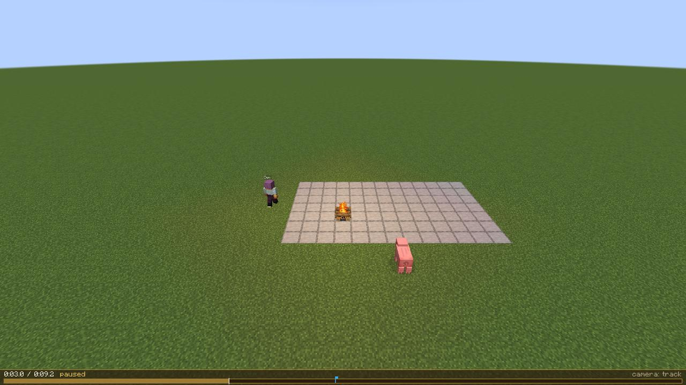
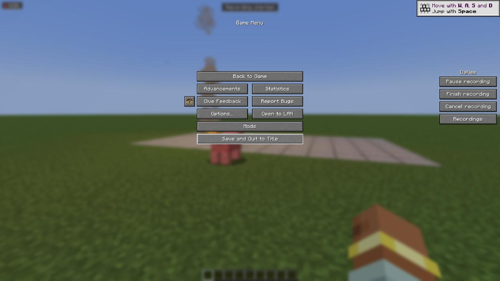
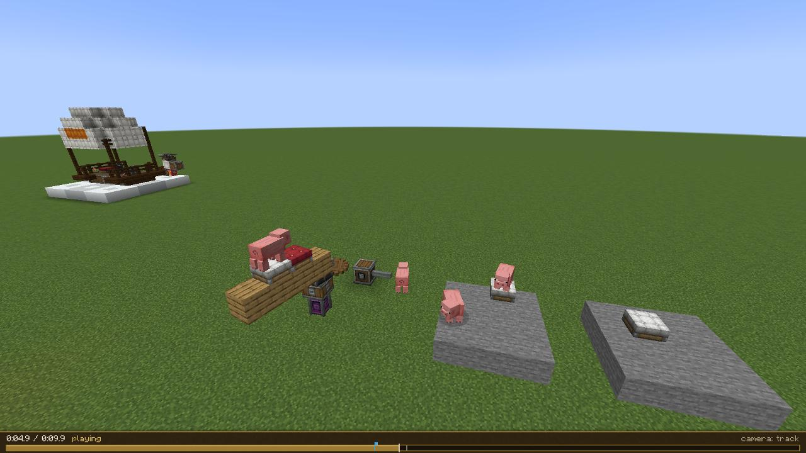
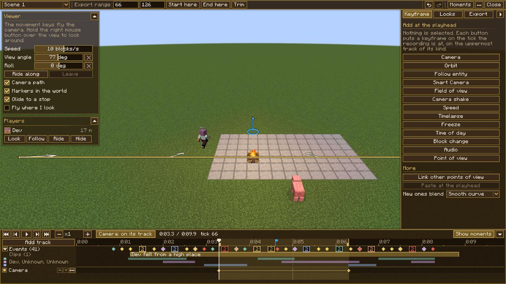
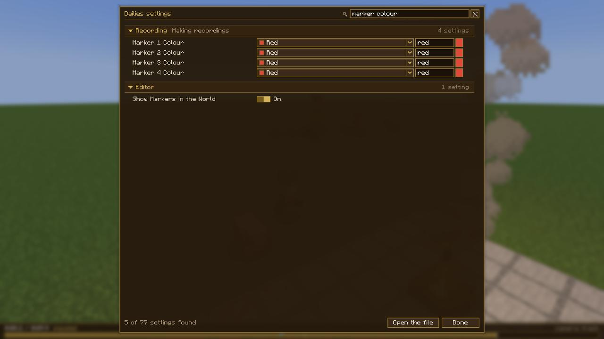

Create
29 displays · 1.21.1 onlydailies-compat-create
Every play-time screen, overlay and outline in Create 6.0.10, including schematics stored once in the recording.
Play now, direct later. Dailies records your Minecraft session to a single file, then puts you back inside it as an invisible camera, with a keyframe timeline, a camera that films for you and a studio-grade exporter.
Dailies is built for people who make videos. It records everything, finds the best moments, and puts a director's toolkit on top. Every screenshot in this manual was taken from the running game.
Chests, furnaces, villager trades, your inventory with the mouse pointer moving, books, signs, the HUD, voice chat icons and mod screens, all recorded and drawn again. Ride along in first person and the video looks as you saw it while playing.
Compats for Create, Aeronautics, Jade, Supplementaries, Sophisticated Backpacks and more: over 25 mods and 120 screens and overlays checked in the game by an automated test. On 26.3, Create, Aeronautics, Supplementaries and Create's add-ons wait for those mods to release for it. See the full list ›
Create contraptions turn, Sable craft fly, and passengers stay on deck, checked to within a third of a block. On 1.21.1, where Create and Sable are.
Ride along in first person with the HUD on and you see what they saw: darkness, nausea, the portal's wobble, frost, fire, water, the carved pumpkin and the spyglass. Potion swirls, invisible mobs and no music over the recording, as in the game.
Chase, tripod, orbit, or a Director that edits its own film. It never goes through a wall.
Kills, bosses, firsts, laughter and craft launches are logged, scored and turned into clips with a suggested camera.
Hardware H.264, H.265 and AV1, plus ProRes and DNxHR, separate audio tracks per speaker, captions, a queue, and background export while you play.
Friends' recordings of the same session line up to the tick. Cut between them on the timeline.
A built-in MCP server lets an AI agent record, edit, export and search moments.
Most replay tools show the world and lose everything that was on your screen. Dailies records the interface you used while playing, and draws it again with the game's own code in playback and in exports.

PLAYBACKCompats teach Dailies other mods' screens, overlays and in-world marks, and redraw them with the mod's own drawing code, so they look exactly as they did. Each compat is a small jar: drop the ones for your pack in next to Dailies.
Every play-time screen, overlay and outline in Create 6.0.10, including schematics stored once in the recording.
Simulated and its add-ons: the readouts you see while flying, and the coaster track tools.
The look-at box exactly as Jade drew it: every element, its theme and the block-breaking line.
Supplementaries and Amendments: signs, boards, the cannon and its arc, and their placed blocks.
Create's wider family, covered together.
The quality-of-life mods found in most packs.
This is the complete list. Support comes from Dailies itself, from a Dailies compat jar, or from hooks built into the mod.
| Mod | What is recorded and drawn again | Support from |
|---|---|---|
| Minecraft | The HUD, every container window with the pointer, villager trades, the inventory, books, lecterns, book and quill, signs and hanging signs | Dailies |
| Simple Voice Chat | Talking, whispering and status icons over heads; the recorder's status icon and group list in the corner | Dailies |
| Create | Goggles readout, value boxes and settings board, wrench and toolbox wheels, toolbox hotbar marks, clipboard, schedules, stations, train assembly and HUD, display links, factory gauges, sequenced gearshift, threshold switch, elevator contact, symmetry wand and mirror, worldshaper, stock keeper, filters, package port, redstone requester, schematics held and placed, glue and selection outlines, placement helpers, track hint, blueprint row, status lines | compat-create |
| Create Propulsion | Its outlines and value boxes | compat-create |
| Simulated | Altitude sensor, modulating linked receiver, nameplate, contraption diagram, linked typewriter, readouts while an assembler lever, steering wheel or throttle is held, physics staff padlocks | compat-aeronautics |
| Simulated Coasters | Track placement row, hint row, Bezier handles | compat-aeronautics |
| Create Aeronautics · Create Offroad | Their action-bar lines; Offroad's tyre line | compat-aeronautics |
| Jade | The look-at box exactly as drawn, with its theme and the breaking line | compat-jade |
| Supplementaries | Doormat, sign post, blackboard, speaker, present and trapped present, cannon and its trajectory, red merchant, notice board, pulley, sack, lunch basket, safe, quiver row, slingshot outline, status lines | compat-supplementaries |
| Amendments | The lectern book | compat-supplementaries |
| Create Deep Seas | Sonar, PDA, implosion, engine throttle, console | compat-createextras |
| Create Connected | Pulse generator | compat-createextras |
| Create Encased | Automatic clutch, recaser wheel | compat-createextras |
| Steam 'n' Rails | Bogey menu, tag wheel, train switch | compat-createextras |
| Create Jetpack | Jetpack controls | compat-createextras |
| Create Hypertubes | Arrow, escape bar, outline | compat-createextras |
| Sophisticated Backpacks | The whole window: upgrade tabs, scroll, search | compat-extras |
| Curios · Corpse | Their windows, with extras | compat-extras |
| VanillaBackport | The nautilus inventory | compat-extras |
| Explorer's Compass · Nature's Compass | Their lines while held | compat-extras |
| Post Rider | Mailbox, reading a letter, writing a letter | Built into the mod |
| Create Addons | Its windows with Sort and quick-move, Electric Motor, Clockwork Dynamo, Geothermal Turbine, Splitter, Trade Bot and Trade Master screens, jetpack gauge, villager goggles, goggle lines | Built into the mod |
| McpCraft | Job board and its tabs, Job Storage, job and factory prompts, track markers, job beacon | Built into the mod |
No compat? Still covered. Most mod container screens are recorded by Dailies' general window recording. Compats add custom widgets, scroll positions, overlays and marks drawn in the world.
Mod authors: register a DailiesCompat with the public API (gradlew apiJar) and claim your screens, overlays and a server half. Copy compats/template to start.
Put dailies-26.3-1.3.0.jar (with NeoForge 26.3) or dailies-1.21.1-1.3.0.jar (with NeoForge 21.1) in mods, plus the compats for your pack. The encoder and the companion are inside the jar.
Join a world, press Esc, then Start recording. A red lamp shows in the corner.
Finish, open Recordings, then Watch. Fly freely and press P to play.
Add camera keyframes, set the range, choose a preset and press Export.
Running a server? Install the Dailies Companion on it. The companion supplies what only the world's server knows: boss fights, close calls, craft and train events, and the data compats need from the server side. In singleplayer you need nothing extra: Dailies carries its own copy, which also works when you open your world to LAN. On a server without the companion, recording still works, but Dailies has less to show.
Dailies itself runs in your own game and writes everything to dailies/ in your game folder. Players without Dailies can still join a server that runs the companion. They are sent nothing.
The recording keys (start, pause, markers, log a moment) have no default key. Set them under Options → Controls → Key Binds → Dailies.
Press Start recording in the Dailies column of the pause menu, play as usual, then press Finish recording and give it a name. Pause stops the clock, and Cancel throws the recording away after asking.



/dailies command| Command | Does |
|---|---|
/dailies start · finish [name] | Starts a recording, or finishes it. With a name, it saves without asking. |
/dailies pause · resume · cancel | Pauses, resumes, or throws the recording away after asking. |
/dailies mark [colour] [yes|no] [words] | Drops a coloured marker. yes also stores where you stand, shown in playback as a ring on the ground. |
/dailies moment <words> | Logs a moment: /dailies moment that was good. |
/dailies moments · config · hide | Opens the moments page or the settings, or hides everything Dailies draws on screen. |
The command belongs to your own game, so it works on every server and no server ever sees it.
Crash-safe. After a crash, the title screen offers Unfinished recordings. Recovering keeps everything up to the last few seconds before the game closed.
One file. A recording is a single .dailies file you can copy or rename. It also keeps server resource packs and the voice chat you heard. Dailies pauses recording before the disk fills up.

.dailiesshare with friends, and Import theirs.You become an invisible camera inside the recorded session. Nothing in it can touch you, and nothing you do changes it. Jump anywhere and the world is exactly as it was at that moment.

PLAYBACKThe Players card lists everyone in the recording. Look at them, Follow them (easing round walls), Ride through their eyes, or Hide them from the scene.
Import a friend's recording of the same session. It lines up to the tick with yours, and appears as a lane you can cut to.
A keyframe timeline over the live view. It keeps the centre of the screen clear, saves into the recording as you go, and folds away completely. Press T to toggle it.




| Kind | What it sets |
|---|---|
| Camera | Position, yaw, pitch and roll, blended by hold, straight, ease or smooth curve. |
| Orbit | Circles a point, or an entity as it moves, keeping clear of blocks. |
| Follow entity | Keep place follows it through doors. Stay and watch turns to watch, and cuts to a new spot when the entity is hidden. |
| Smart Camera | Films a player by itself (see below). |
| Speed · Timelapse · Freeze | Slow motion and fast motion, a stretch played in a set time, or the world held still while the camera moves. |
| Field of view · Shake | Lens width from 1 to 170 degrees, and a hand-held wobble. |
| Time of day · Block change | Change the sky, or swap a block from that tick on. |
| Audio · Point of view | Add music from your disk, or cut to a friend's recording. |

Add a Smart Camera keyframe, click a player, and choose how to film them. It is smooth, keeps the player in frame, never goes into or through a block, and gives the same shots every time.

Follows behind the player and ignores small wobbles. A real turn swings it round. It leaves more room ahead at speed, rises over the ground behind them, and in caves and doorways follows the way they came.
Stands still and pans after the player, with a dead zone so small moves don't swing it. Placed by itself, it picks a spot with a clear view of where they are heading, and cuts to a new one when they leave its view. Placed fixed, it stays where you set it.

Circles the player at a steady rate. It looks ahead along the circle and shrinks or lifts it to fit between blocks. If a door walls the player off, it cuts to the nearest place with room and carries on round.
Every frame is drawn at an exact tick, so a slow computer makes the same video as a fast one, only later. Set the range, choose a preset and press Export, or queue many jobs and keep playing.


| Preset | Output |
|---|---|
| YouTube 1080p60 | 1920×1080 · 60 fps · MP4 · H.264 or AV1 |
| YouTube 4K60 | 3840×2160 · 60 fps · MP4 |
| Shorts & Reels | 1080×1920 portrait · 60 fps |
| Editing master | ProRes 422 HQ or DNxHR HQ · uncompressed sound in separate tracks |
| Smallest | 1280×720 · 30 fps · AV1 |
NVIDIA, AMD, Intel and Apple. On NVIDIA, every encoder unit works at once, about 2.5× faster for 4K AV1.
Game sound, each speaker and music as their own WAV files or embedded tracks, ready for your editor.
SRT and WebVTT files, or captions drawn into the video one line at a time or word by word.
Queue scenes from any recording. The queue survives a restart.
A hidden second game works through the queue while you keep playing, even overnight after you close your own game. It never touches your saves or settings.
Why there is no software H.264: the usual software encoders would force a GPL build of FFmpeg, which cannot ship inside a mod like this. Without a hardware H.264 encoder you are offered AV1, which YouTube accepts. The bundled encoder is FFmpeg 8.1.2 (LGPL) for Windows, Linux and macOS.
The feature the mod is named for. While you play, recording or not, Dailies logs what happens, scores it and groups the best events into clips, each with a title and a suggested camera.

Press Make scene on a clip to get a scene with that range and camera ready to export.
Private by default. With Use AI Services off, nothing is sent anywhere, and both AI server addresses are empty until you fill them in. With AI on, voice goes only to the transcription server you choose. Voices Left Out keeps a player's voice out of Moments completely.
Install it on your server. Singleplayer needs nothing extra, because Dailies carries its own copy. It reports events only the server knows (boss fights, close calls, totems, explosions, train departures, craft lost) and carries compats' server-side data. Operators can send their own events with /moment send. Reference ›
Point an AI agent at http://127.0.0.1:25595/mcp to record, edit, export and search moments. It is local only unless you open it, and remote access uses HTTPS and a token.
Searchable with CtrlF, resettable, and applied without a restart. Stored in config/dailies-client.toml.
